Aly Wheale · Product Designer · Design Systems · Enterprise & Data-Dense Products · AI/ML Tooling
I design the parts of a product that are hard to make simple. Most of my work has been in compliance, enterprise search and machine-learning tooling: places where the data is dense, the consequences of a wrong answer are real, and the person using the software is an expert with no patience for a tool that gets in the way. I started as a front-end engineer, which still shapes how I work. What follows is five projects and the reasoning behind them.
01
Rebuilding enterprise search for compliance reviewers around a single intelligent input rather than a page of form fields.
Enterprise Archive is a communications compliance platform. Regulated firms, banks, brokers and insurers, are legally required to capture every business message their staff send across email, Bloomberg, instant messaging, social and mobile, retain it for years, and produce any of it on demand for a regulator or a court.
Search is not a convenience feature in a product like this. It is the product. If a compliance officer cannot find a message, the firm cannot answer the regulator.
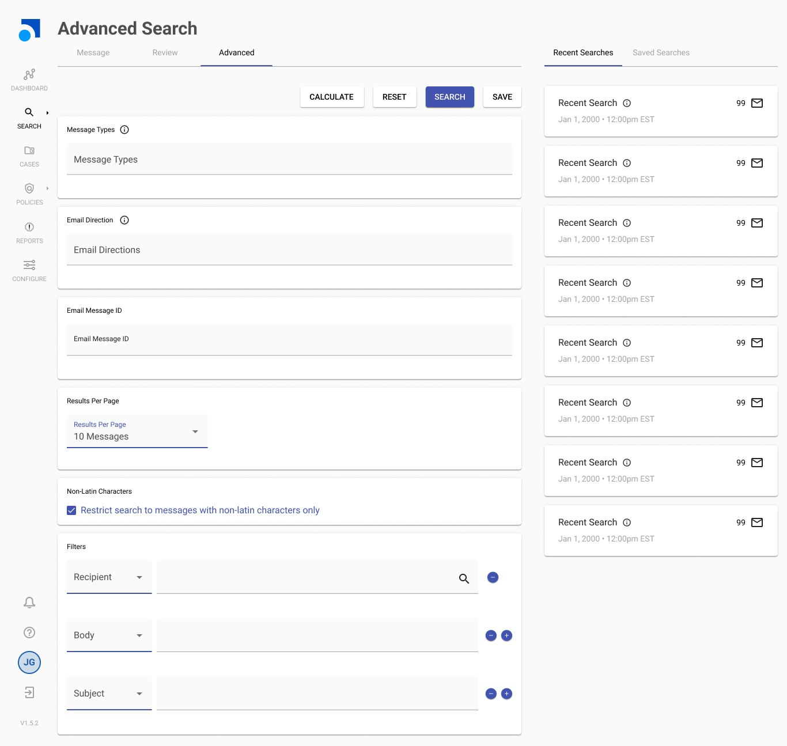
The existing search was a long, sectioned form. Content, people, keywords, files, dates, review state, permissions, each in its own expandable panel with its own controls. It was complete and it was correct, and it was exhausting.
The insight I worked from was that people already knew how to describe what they wanted. They just had no way to say it. So rather than reorganising the form, I replaced its front door with an input that accepts description and resolves it into structured filters.
Everything typed is always offered as a plain word or phrase search. That was the safety net: no input is ever rejected, and the simplest interpretation is always available. On top of that, the input recognises patterns and offers the structured filter that matches.
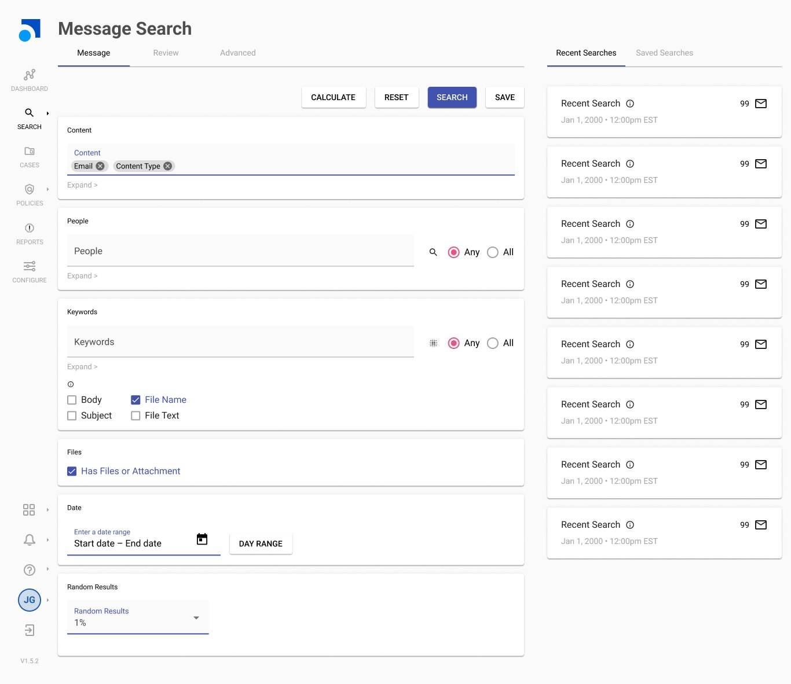
The decision I would defend hardest. Suggesting rather than applying looks like a small interaction detail. It is the whole safety model. If the system decides that ">5MB" means attachment size and the user meant it as text, they get a subtly wrong result set and no reason to doubt it. In this domain a wrong answer delivered confidently is worse than a slow one.
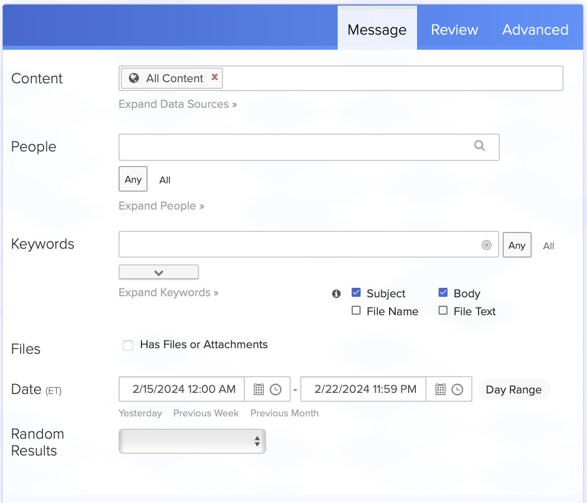
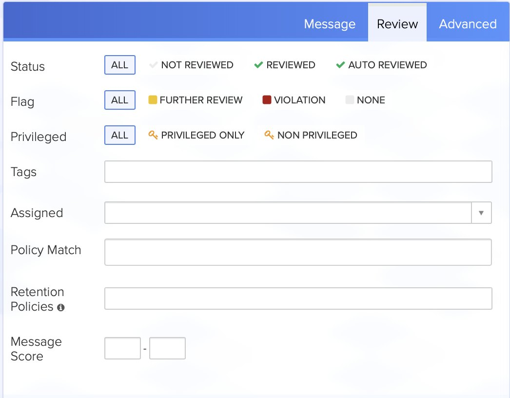
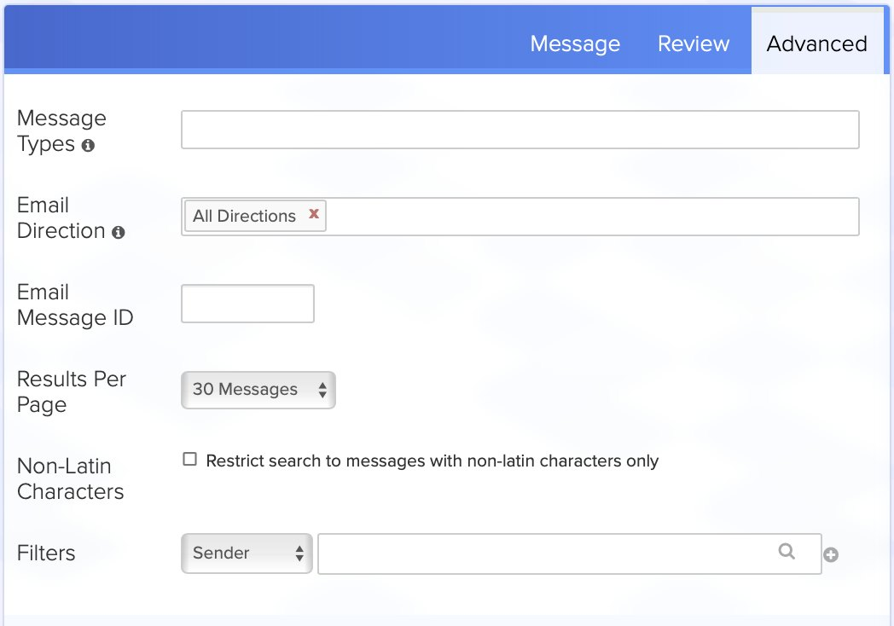
The work shipped as a beta, available under Archive Management where enabled. I wrote the reference documentation for the release.
Screens shown are design mockups populated with placeholder data. No customer data, proprietary assets or confidential documentation are reproduced.
02
An analytics interface for comparing model versions against each other on real communications data. Precision and recall as an interface problem.
Compliance platforms use machine-learning classifiers to flag communications that may breach policy: market abuse, harassment, gifts and entertainment. Every classifier makes two kinds of mistake. A false negative means a real breach goes unseen. A false positive means a reviewer wastes time on a clean message, and enough of them means reviewers stop trusting the system altogether.
The people tuning these models needed to see, concretely, what a change to a model actually did.
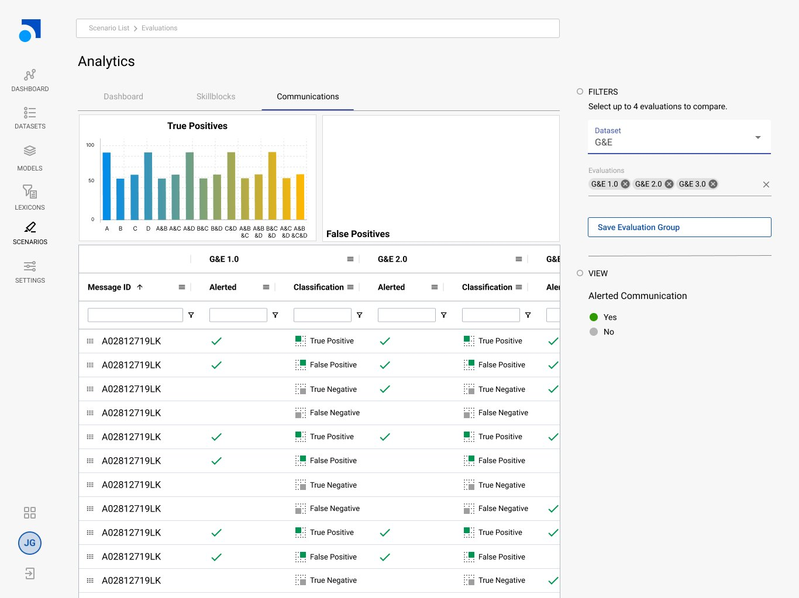
Model quality is usually reported as summary metrics. Summary metrics tell you a model got better on average. They do not tell you what it now gets wrong. Someone deciding whether to deploy a version needs to see the individual messages where versions disagree, and to see several versions at once, because tuning is iterative and the question is always "compared to what".
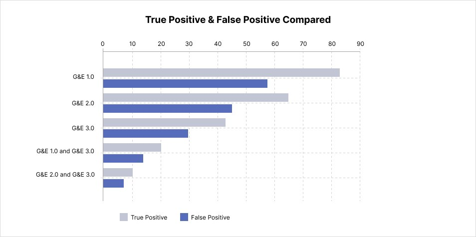
Screens shown are design mockups populated with placeholder data. No customer data, proprietary assets or confidential documentation are reproduced.
03
Speech², a speech-analytics platform for contact centres: search across transcripts, sentiment plotted along the waveform, and real-time assistance while the call is still happening.
Contact centres record everything and can review almost none of it. A supervisor with a thousand calls a day and time to listen to six is choosing at random. Speech analytics exists to make that pile searchable: transcribe the audio, detect entities and sentiment, and let a human go to the moments that matter.
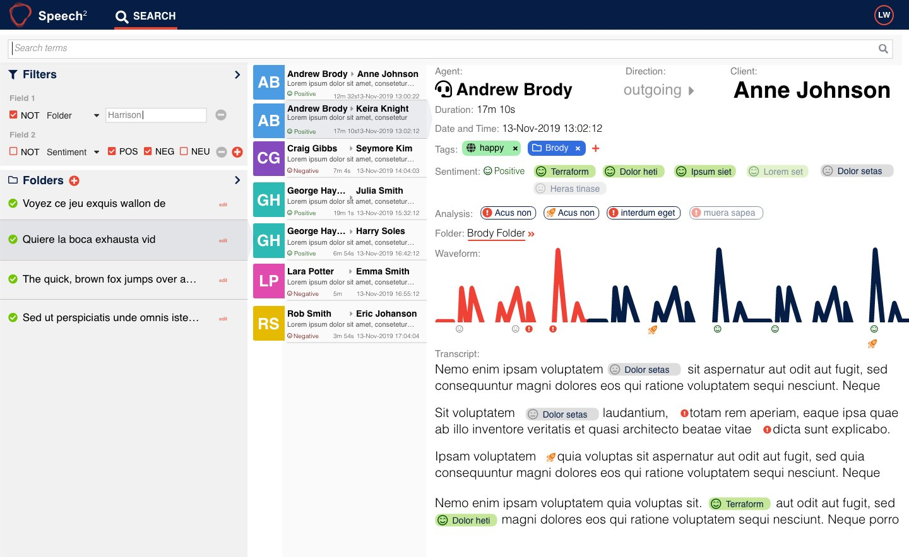
The hardest surface was Agent Assist, because it is the only one used by someone who is mid-conversation. Every other screen in the product belongs to a person sitting and thinking. This one belongs to a person talking to an upset customer, who can spare a glance. Anything that demanded reading was a failure by definition.
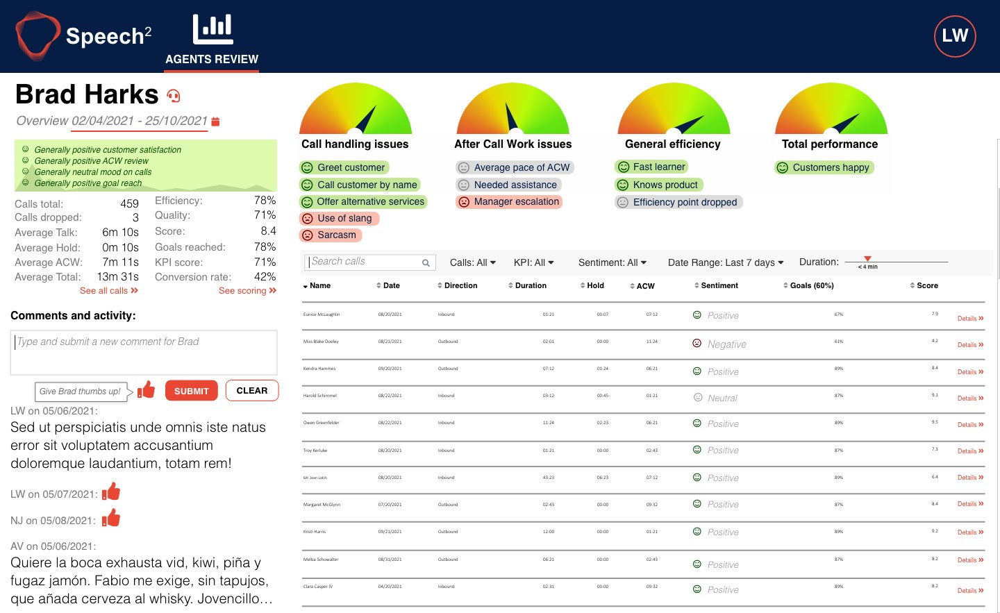
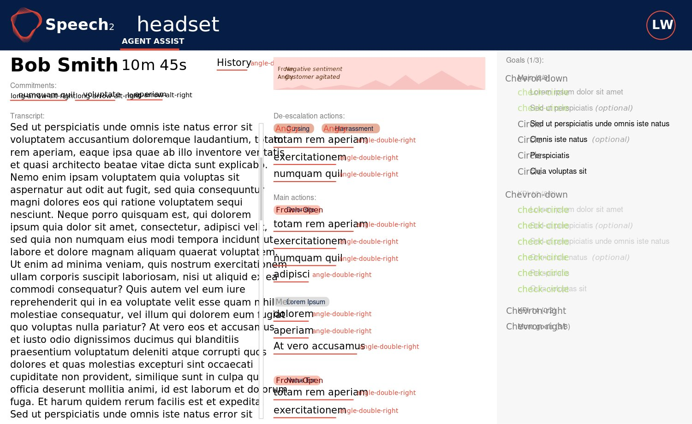
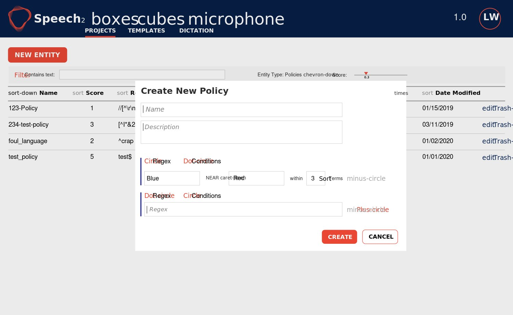
This was intermittent consulting rather than a staff role. The pattern was consistent: the team had a requirement or an idea, and needed it made concrete enough to argue about. I would turn it into wireframes quickly, we would react to those, and it would iterate. The search screen alone went through eight named versions.
Published with the client's permission. Sample content shown is placeholder data.
04
A quality-management tool where evaluators score agent calls against forms, and agents can appeal the result.
Evaluation forms are scored out of a hundred across categories such as greetings and service types. But some questions are regulatory. If an agent misses one of those, the entire evaluation drops to zero, even if they scored ninety-nine everywhere else. That is not a bug in the scoring. It is the signal to a supervisor that the agent needs coaching immediately.
Designing for that rule is the whole problem. A score of zero next to a form full of ticks looks like a system error unless the interface explains itself. The scoring has to feel deliberate and fair at the moment it delivers the worst possible outcome, to a person who is about to appeal it.
Agents do not have access to the analytics system. A supervisor appeals on their behalf. A judge then reviews the appeal and rules one of four ways: the mark stands, it is overturned, it is a draw, or it is discarded. Every one of those outcomes needed to be visible on the evaluation itself, because the record has to survive scrutiny long after everyone has forgotten the call.
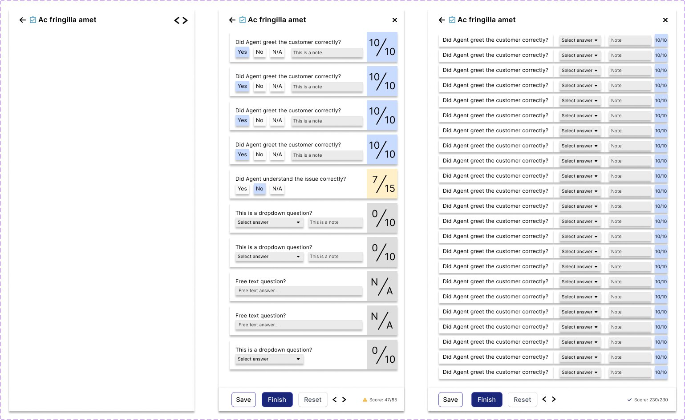
The evaluation cards were built as a Figma component set with variants for default, low score, dropdown answer, free text, with notes, and dropdown with notes. The form itself had list, form and table-form variants. Eight iterations from v1.1 to v2.3.
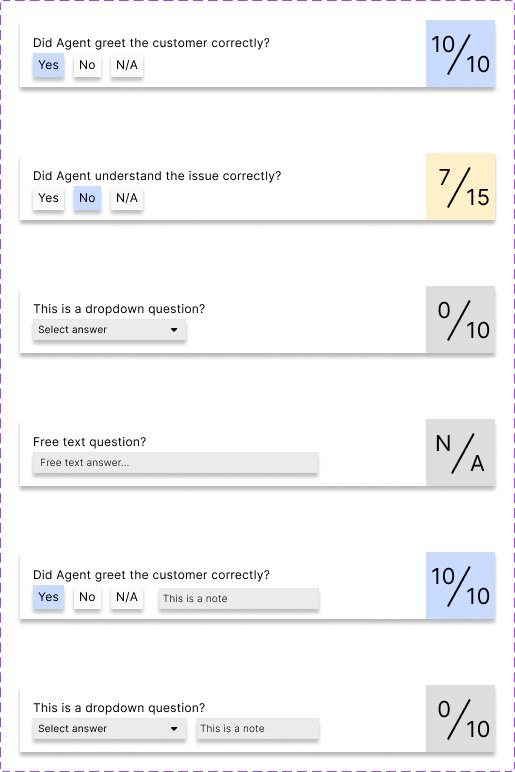
Published with the client's permission. Sample content shown is placeholder data.
05
Designing the successor to Autonomy Business Console, search augmentation for HPE IDOL, while still employed as an engineer.
IDOL was HPE's machine-learning platform for unstructured data: text, speech, audio, image and video. Enterprise search was one of its main selling points. Search augmentation is the work of making that search return the right things: promoting particular documents for particular queries, managing synonyms and blacklisted terms, and understanding why a query returned what it did.
The existing tool for this, Autonomy Business Console, was slow, dated against modern web applications, and had a steep enough learning curve to be a barrier in itself.
The users were not the people searching. They were business and content administrators tuning search on behalf of everyone else: a group with deep domain knowledge and no patience for a tool that made them work to express it.
I could not talk to them directly. What I had was the predecessor product's customer feedback, market research, customer-proxy requirements from the sales side, and the ability to study the old tool closely. So I built the understanding from those instead, and wrote it down as personas and user stories the whole team could design against.
Working without direct research access is the normal condition in enterprise software, and being effective anyway is a skill rather than an excuse. The evidence is there if you are willing to go and find it in support tickets and sales calls rather than waiting for a research budget.
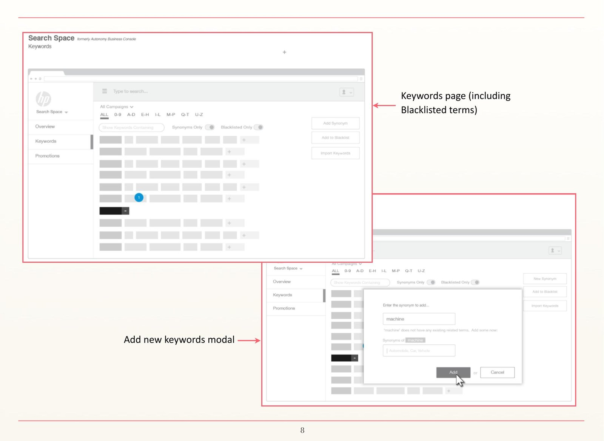
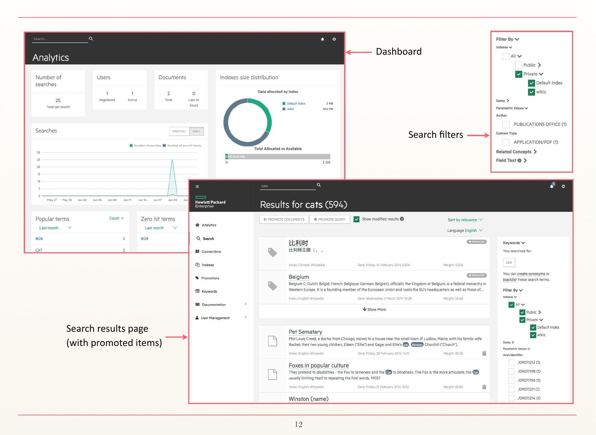
I was employed as a front-end engineer on this team and took on the design work because it needed doing. That shaped the outcome. I knew what was cheap and expensive to build, I could prototype in code rather than describing an interaction, and I was involved in implementing and testing what I had designed. I was later recognised as UX lead on the team.
It also means the constraints I recorded at the time are engineering constraints as much as design ones: framework capability and limitation, developer time, fool-proofing against user error.
The Search Augmentation Tool shipped as the successor to Autonomy Business Console and continued to be developed after release. It carried forward into Micro Focus as Search Optimiser.
Screens shown are design mockups populated with placeholder data. No customer data, proprietary assets or confidential documentation are reproduced.
06
Shorter pieces worth a page rather than a full study.
Compliance policies scan communications in a defined order, from the bottom of the list upward, and a higher-priority policy can override the actions of a lower one. Policies can also depend on each other, and some short-circuit the rest of the chain.
That is a hard mental model, and the design carries it: explicit numeric priority, drag-and-drop reordering with a deliberate save step rather than autosave, dependency shown on the policy itself, distinct icons for short-circuit and inactive policies, channel icons with a legend kept permanently visible, and a plain-language explanation of scan order beside the list rather than behind a help link.
The save step is the decision worth defending. Reordering policies changes what gets flagged across an entire organisation. Autosave would be actively dangerous. Making the user commit is the right friction.
Cases collect messages for investigation or litigation. The design covers creating a case with custodians and date ranges, applying legal hold, case states for active, hold applied, no messages and inactive, and reviewing case contents in table and card views using the same review actions available in search, so reviewers never learn two systems.
A curation queue for incoming questions needing answers, with a pipeline bar carried across every screen showing where content sits: incoming, answerable, needs answer, in the Answer Bank, incoming answers. Curators triage from a queue, discarding, answering, or linking a question to an equivalent one. The pipeline bar doubles as navigation.
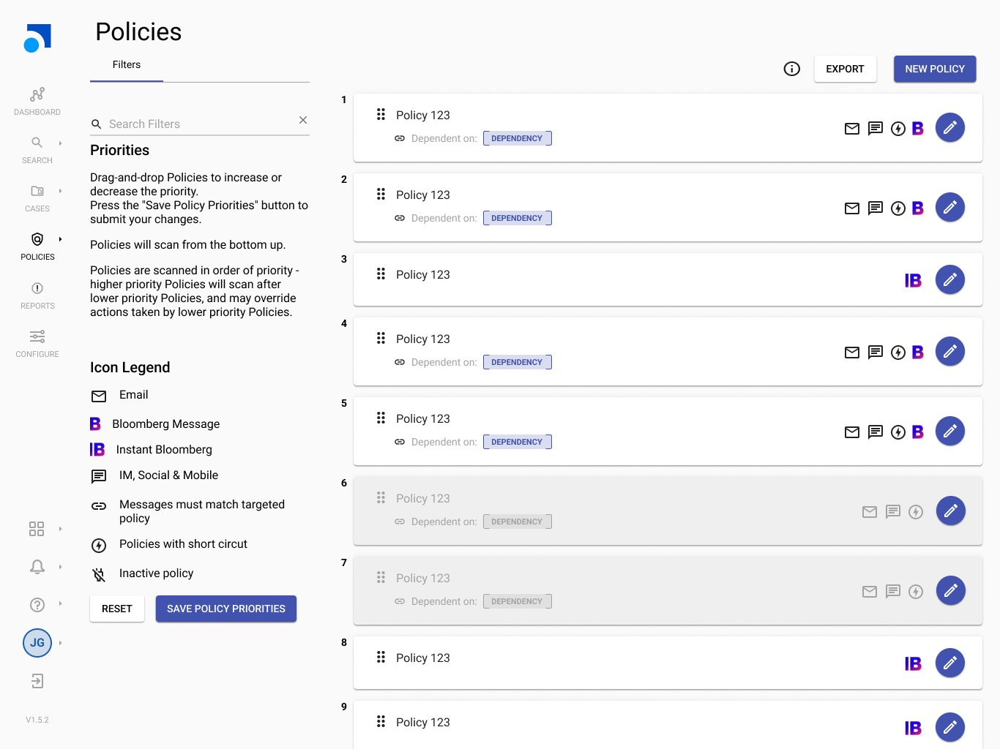
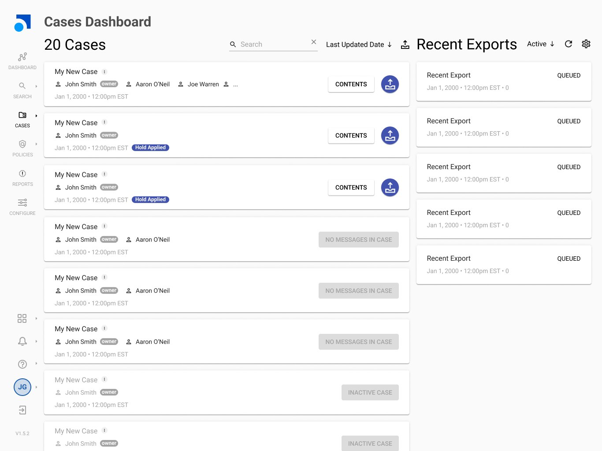
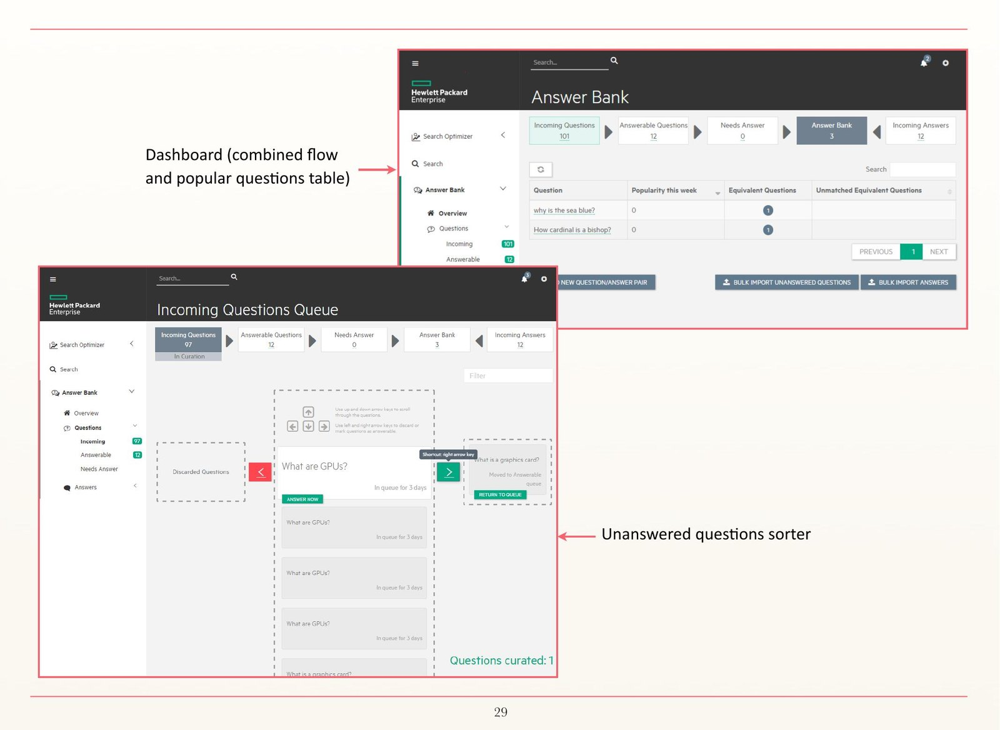
Product definition. Defining the thing and its requirements. Analysing what has been asked for, consulting on feasibility, assessing timeframes and resources before anyone commits.
Research. Product, context, market, target users and existing competition. Support tickets and sales feedback where direct user access is limited, which in enterprise it usually is.
Analysis and persona building. Turning that into something a team can design against: personas, user stories, empathy maps, storyboards.
Ideation. Workflows and low-fidelity wireframes, fast and rough, so the argument happens early and cheaply.
Prototyping. High-fidelity design and a working prototype where the interaction is the point rather than the layout.
Testing. With whoever I can reach: niche user groups, focus groups of existing clients and subject-matter experts, usability sessions.
I have also defined how design fits into the development lifecycle: a two-stage process taking client and market requirements through brainstorming and focus-group feedback to locked wireframes and epics, then into design stories with signed-off mockups. It was adopted across product teams at Micro Focus.